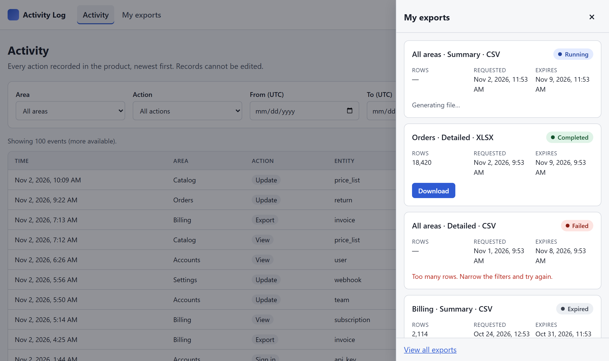

On this page
Executive summary
The whole story in thirty seconds.
The problem
A one-request “Export CSV” silently cut large exports at 100,000 rows, timed out after 30 seconds, took the API down with memory spikes and leaked files through e-mailed links.
The approach
Make the export a queued job. Stream rows in 1,000,000-row parts through a keyset cursor pinned to a high-water mark, then hand the file out only through an owner-checked, audited, 60-second link.
The outcome
Any result size with bounded memory and database load, a consistent snapshot, live progress in the UI — and every download on the audit trail.
The ten failures
The first version worked for a week of data. Then the log grew to tens of millions of rows and real users asked for real date ranges.
| Symptom | Root cause | Fixed by |
|---|---|---|
| Silent truncation: 2 million rows came back as exactly 100,000 | A hard LIMIT 100000 was the only memory control | streaming, no row limit |
| 504 after 30 seconds | Query, serialisation and transfer inside one request | async job, part per invocation |
| API pods killed for memory | Every row materialised; the CSV built as one string | server-side cursor streaming |
| Every other screen slowed down | Unbounded OFFSET scans on the hot table | keyset reads, read-only role, capped concurrency |
| Two exports of one range, different counts | New rows shifted LIMIT/OFFSET pages | pinned high-water mark |
| Excel could not open big files | One sheet holds at most 1,048,576 rows | 1,000,000-row parts, zipped |
| A spinner and duplicate clicks | No job, no status, no progress | job status and My exports tray |
| Public download links in e-mail | Convenience over security | notify without a link |
| Files kept forever | No retention policy | 7-day retention |
| Nobody knew who exported what | Downloads ran outside the audit path | audit row before the URL |
A composite of problems met in production systems, not one company’s incident; product details and numbers are changed. Full write-up: docs/01-the-problem.md.
What the replacement had to guarantee
Ten failures became eleven requirements: together they are the acceptance test for the design.
- No row limitAny result is exported completely, or the export fails loudly. It never truncates.
- Spreadsheet-safe filesUp to 1,000,000 rows in one file; larger results in 1,000,000-row parts, zipped into one download.
- Never block, never bufferNo request waits on the export, and no file is ever held whole in memory.
- A consistent snapshotEvery exported row existed when the export started; later rows never shift or duplicate pages.
- Bounded database loadA read-only role, keyset pagination and capped concurrency.
- Status you can seeQueued, running, completed or failed, with parts done, and a tray to re-download until expiry.
- Notify, but never send the fileIn-app and by e-mail; the e-mail links to the tray, not to a file or URL.
- Owner-only, audited, short-lived downloadThe audit row is written before the URL leaves; the URL expires in seconds.
- Data-free file namesPredictable names with no user data, plus
_part01-of-03for parts. - RetentionFiles and job records disappear after 7 days.
- OperableRetries, a dead-letter queue, alarms, idempotent stages and safe re-delivery.
Who it serves
Support, security and auditors read the activity log every day and regularly need it as a spreadsheet. Three groups, three different jobs.
People who export
Support, security, auditors
- Job
- Get a complete copy of the log for a date range they can open in a spreadsheet.
- Pain points
- Files that looked complete but were cut; timeouts; no idea whether anything was happening.
- What they got
- Complete files, live progress, a toast when it’s done and a tray to download from later.
Compliance & security
Own the audit trail
- Job
- Know who exported which data, and that no copy outlives its purpose.
- Pain points
- Downloads outside the audit path; links forwarded by e-mail; files kept forever.
- What they got
- An audit row for every handed-out URL, owner-only 60-second links and 7-day retention.
Engineers & operators
Keep the product up
- Job
- Run exports without hurting the transactional product.
- Pain points
- One user’s export taking the API down; primary-database load; retries making it worse.
- What they got
- Bounded memory and load, idempotent stages, a dead-letter queue and alarms.
The product
An export runs in the background while you keep working. Each job ends completed, failed with a reason, or expired.

The “My exports” tray of the React UI, shown with the project’s mock demo data (npm run dev:mock).
Solution architecture
The API only records the intent and returns. A worker does the heavy lifting in bounded steps, the UI follows the job’s status, and the file leaves only through an audited link.
- Export line
- Audit line
- Notify line
- Failure path
System map
Figure 1The API never waits on the export and never returns a file. The only way to a file is the audit line: owner check, audit row, then a presigned S3 URL valid for 60 seconds.
| Piece | Locally (docker compose) | On AWS (CDK) |
|---|---|---|
| Activity log | PostgreSQL 16 | RDS / Aurora PostgreSQL, via a secret |
| Job store | DynamoDB on LocalStack | DynamoDB on-demand, TTL, point-in-time recovery in prod |
| Queue + DLQ | SQS on LocalStack | SQS with server-side encryption |
| Worker | A poller container, same handler | Lambda, Python 3.12, arm64, 15 min, reserved concurrency |
| API | FastAPI container | FastAPI on Lambda + HTTP API (Mangum) |
| Files | S3 on LocalStack | S3, public access blocked, encrypted, 7-day lifecycle |
| Mailpit | Amazon SES |
Decisions
Five architecture decision records, one per hard constraint: request limits, a growing table, worker time limits, the audit trail and e-mail.
An export is an asynchronous job, not a request
ADR-0001- Context
- Exports range from a few rows to tens of millions; a request is bounded by a ~30 s timeout, API memory and an open tab.
- Decision
POST /api/exportsvalidates, records aqueuedjob, publishes a queue message and returns202 Accepted. A worker produces the file.- Result
- No timeout or memory ceiling ties result size to HTTP. Truncation is impossible by design.
Write the audit row before handing out a URL
ADR-0004- Context
- In an activity-log product, exporting the log is itself an activity — and a presigned download happens outside the application.
- Decision
- One endpoint hands out URLs: owner, status and expiry checked, an
export / downloadrow inserted, then a URL valid for 60 seconds. - Result
- Every handed-out URL has a matching audit row. No audit, no file.
Keyset pagination plus a pinned high-water mark
ADR-0002- Context
LIMIT/OFFSETover a growing table skips or duplicates rows; a long transaction can’t span many worker invocations.- Decision
- Read by
(occurred_at, event_id)after the last row seen, and onlyevent_id <= high_water, pinned once at the start. - Result
- Every part costs the same, and the snapshot survives across invocations.
One worker invocation per part, chained through the queue
ADR-0003- Context
- Lambda has a 15-minute limit, and one failure would throw away all the work done so far.
- Decision
- Stages
export,part Nandzip, each a queue message that enqueues the next; every stage is idempotent. - Result
- Bounded time and memory per step, and a failed part is retried on its own.
Notifications never carry the file or a link to it
ADR-0005- Context
- E-mail is forwarded and archived; a link in it is a credential with no owner check, outside the audit path.
- Decision
- The e-mail says what finished and links to the “My exports” tray; the download goes through the audited endpoint.
- Result
- A misdirected e-mail leaks nothing; every download is owner-checked.
Implementation
The three mechanisms that carry the guarantees, drawn on the same lines.
Parts on a keyset cursor, under a high-water mark
Figure 2The snapshot is defined by data, not by a transaction, so it survives across invocations. A part whose row count doesn’t match the plan fails the job with ROWSET_CHANGED instead of producing a silently wrong file.
The audited download
Figure 3Status endpoints never return URLs, and a copied link is useless within a minute. Every file that leaves has a matching, contemporaneous audit row.
Job lifecycle
Figure 4A re-delivered message finds the job already running and stops. If the queue send fails, the job is marked failed at once, so a job never sits in queued forever.
Running it in production
At-least-once delivery is only safe when every stage can run twice. The rest is making failure loud.
- Idempotent stagesEach stage checks the job state and the existing objects before writing, so a re-delivery is harmless.
- Dead-letter queueAfter 3 receives a message moves to the DLQ, an alarm fires and the job is marked failed.
- Visibility longer than the worker16 minutes against a 15-minute Lambda, so a running message is never handed to a second worker.
- Alarms to SNSDLQ not empty, worker errors, duration near timeout, oldest message age, API errors.
- Policy as codecdk-nag runs on every synth; an unsuppressed finding fails the build, and each suppression states its reason.
- Locked-down storageS3 blocks public access, is encrypted and TLS-only, has no CORS and aborts stale multipart uploads after a day.
- Safe filesUTF-8 with BOM, and cells starting with
= + - @are escaped against formula injection. - Private by defaultAn optional VPC mode with no default egress: only the database port and the AWS interface endpoints.
Trade-offs
Every decision gave something up. These are the costs the ADRs accept on purpose.
| Chose | Instead of | The cost, and why it’s worth it |
|---|---|---|
| A queued job | A synchronous request | A queue, a worker, a job store and a status lifecycle to keep consistent, tamed by conditional transitions and idempotent stages. |
| High-water mark + keyset | OFFSET paging or a long snapshot transaction | Relies on the log being append-only, which a trigger enforces by blocking updates and deletes. |
| Parts run one after another | Parallel parts per export | A single huge export takes longer, but the read load on the database stays capped. |
| No audit, no file | Best-effort audit logging | If the audit row can’t be written, the download fails. Intentional for a compliance trail. |
| E-mail links to the tray | A download link in the e-mail | One extra click, in exchange for an owner check and an audit row on every download. |
| A hard ceiling of 20 parts | Unbounded exports | Larger requests fail fast with TOO_LARGE and ask the user to narrow the filters. |
Results
Every requirement maps to a mechanism, and the mechanisms are checked end to end in CI.
- Complete exports at any sizeStreaming and parts replace the row limit; a mismatch fails loudly with a reason.
- Bounded memory and loadRows go from a server-side cursor straight into multipart uploads; reads are keyset-based and concurrency-capped.
- The same answer twiceThe high-water mark keeps every export a consistent snapshot.
- Users can leave and come backProgress, a toast anywhere in the app, and the “My exports” tray.
- Every download on the trailOwner-only, audited, 60-second links; nothing in e-mail; files gone after 7 days.
- Verified, not asserted
make smokeruns a multi-part export, zip, audited download and e-mail on the local stack, in CI.
System figures
| Setting | Value | Why |
|---|---|---|
| Rows per part | 1,000,000 | Under the spreadsheet limit of 1,048,576 rows per sheet. |
| Maximum parts | 20 | Above that the job fails fast as TOO_LARGE. |
| Download URL lifetime | 60 s | A copied link is useless within a minute. |
| Retention | 7 days | S3 lifecycle for files, DynamoDB TTL for jobs. |
| Receives before the DLQ | 3 | Retries for transient errors, then an alarm. |
| Worker timeout / queue visibility | 15 / 16 min | No message is processed by two workers at once. |
| Reserved worker concurrency | 5 | The default cap on parallel exports, and on database read load. |
Configuration values from the repository’s documentation. They describe how the system behaves, not business KPIs; production volumes and costs are not published.
Try it yourself
The whole stack runs locally with one command: PostgreSQL, LocalStack for S3, SQS and DynamoDB, Mailpit and nginx.
$ git clone https://github.com/the3ma/async-export-pipeline.git $ cd async-export-pipeline $ make up # build and start everything, wait until healthy $ make seed # 1.2 million activity events $ make smoke # multi-part export -> zip -> audited download -> e-mail
No Docker? cd web && npm ci && npm run dev:mock runs the UI against mocked APIs. More in docs/03-running-locally.md and the integration contract.
Lessons
What carries over to the next system that moves a lot of data.
- Exporting a log is itself an event.Audit the export path like any other user action, or the trail has a hole exactly where data leaves.
- Define the snapshot by data, not by a transaction.A pinned high-water mark survives retries and many invocations; a long transaction doesn’t.
- Make stages idempotent before adding retries.At-least-once delivery is only safe when running a stage twice changes nothing.
- Convenience is where data leaks.The e-mailed link was the friendliest fix and the worst one.
Moving a lot of data, or need an audit trail?
I design and build systems like this one. If you are hiring, or have a problem that looks like it, I’d like to hear about it.